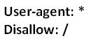

Website Not Getting Indexed? Here’s What You Need to Check
|
|

|
The whole point of having a website is to make it visible across the web and appeal to target visitors. If your website is not indexed, it won’t appear in the search results and this defeats the purpose for which it was created in the first place. There might be a lot of reasons behind search engines not indexing your website. Here is the checklist of common problems related to site indexing and the solutions to fix them.
Robots.txt
Robots.txt, if present, is the first thing that a search engine bot looks up when visiting your website. It is used by webmasters to provide instructions to the search engine bots visiting a site. If your robots.txt file carried instructions to discourage search engine crawling, your site may not get indexed. You can check your site’s robots file by adding /robots.txt at the end of your domain name.

If you see the above instruction in your robots.txt file, it means that the search engine bots are discouraged from crawling your site’s content. You can fix this issue easily by removing the ‘/’ from this command. You can use the robots.txt file effectively to de-index specific folders in your site. Google’s very own robots file has covered an extensive list of commands. Check it out for your reference.
Meta Tags
It is a common practice by webmasters to use meta ‘robots’ tag to prevent search engine bots from crawling a particular web page. If a particular page in your website doesn’t get indexed, check its source code for this meta tag:
This tag will prevent the web page from being crawled by the search engine bots. Some WordPress themes incorporate this meta tag by default. If your WP site has indexing problems, it is worth checking the theme header for this tag. Once this tag is removed from the source code, search engine bots can crawl the particular web page.
Sitemap Errors
A sitemap (XML or HTML) provides a search engine robot with the list of URLs to be crawled in your website. If for some reasons the sitemap in your website is not automatically updated, search engine bots may some time to discover those webpages and this would cause delay in indexing.
You need to check out the Webmaster tool (set up a Google Webmaster account for your site if you don’t already have it) for issues related to the sitemap. The Sitemap Details page will inform you about the errors in it. Once the errors are fixed, you can generate a new xml sitemap for your site and upload it in the root for your website.
Other Crawling Errors
Once you’ve ruled out the above mentioned problems, head to your Google Webmaster Tools dashboard and check for crawling errors. The crawling errors need to be fixed as and when you see them. Some of the page crawling errors might be related URL parameter issues, which mostly happen in the case of dynamic links. You can fix errors like this by using a simple 301 redirect.
Getting Indexed Under a Different Domain Name
Before coming to a conclusion that your website is not indexed, check out for other variations in your domain name that might have been indexed by search engines. For instance, http://www.yoursite.com and http://yoursite.com might look similar to you. However, they are two different URLs according to the search engines.
If you website is indexed in a different name than the one you preferred, you need to specify your preferred domain name in the Webmaster tools and use a 301 redirect. You can also use canonical link element for setting the most preferred URL version but a 301 redirect is more effective.
No Incoming Links
This issue is common in websites that are new to the web. If your website doesn’t have any incoming links from other websites, it might take a while for Google to find your site. If you wish to get your site indexed soon, you may have to build some backlinks manually. Backlinks from high PR websites will provide more link weightage to your website thereby helping it get indexed soon.
Submitting your site to Google Plus will earn you an incoming link and help your site get discovered by the search engine bots. You can also submit your site URL to Google through your Webmasters tool. These methods will significantly improve the chances of getting indexed by Google.
AJAX Applications
If your website runs AJAX application, it would contain AJAX URLs (a URL with # fragment) and the content of these URLs can’t be crawled by search engine bots. This, in turn, would prevent the search engines from indexing your website. There is a separate process to help search engine bots crawl AJAX content. The solution provided by Google Developers will help you fix this issue.
Bad Links & Google Reconsideration Request
It is important for a site owner to constantly assess the quality of incoming links. The inbound links to your website should not violate Google’s guidelines on link quality. You can detect these bad links through your Google Webmaster Tools. If your site has too many bad links, it will be de-indexed by Google and other search engines.
If by any chance your website has been de-indexed due to this issue, you need to disavow these bad links completely and make sure that your site no longer violates the guidelines. Once this is fixed, you need to submit a reconsideration request to Google through your Webmaster tools.
SEO Spamming
There are many black hat SEO techniques practiced by spammers to get higher rankings instantly. Google constantly keeps tab of its search results quality and takes manual action on sites that employ spamming techniques. Shortcut methods like cloaking, keyword stuffing, content scraping and spam links etc. will get your site permanently de-indexed.
The simple solution here is to clean up your site of all the spamming techniques and submit a reconsideration request through your Webmaster tools.
Malware Ridden Websites
Websites infected with malwares may get disappeared from search results very soon. The silver lining here is that you can find the issue before your site gets de-indexed. Google Webmaster Tools will issue a warning that your site has been compromised. Once you’ve discovered the issue, you can remove the malware and enhance your site’s security. You can also submit a reconsideration request if your site has already been de-indexed.
Website Downtime
If your website is continuously down for a significant period (say a few weeks) of time, it might get de-indexed from the search engines. The only solution here is to fix the issue causing downtime and get your site back online. Once your site is back online, it may take a while to get your traffic back to its normal status. If your site isn’t indexed even after fixing the issue, you may have to submit the reconsideration request in the Webmaster Tools.
In addition to the ones listed here, Google has also mentioned a few more cases in which your site may not get indexed.
Fetch as Google
If you believe your website doesn’t have any of the above issues, here’s a simple way to get your web page indexed: Log on to your Google Webmaster Tools account and click on ‘Fetch as Google’ link under ‘Crawl’. Enter your URL and submit to index. You may see the page indexed on Google within seconds. I do this every time I publish a new blog post and it works like a charm.
Conclusion:
These are some of the common issues you need to check if your site hasn’t got indexed. If you have experienced website indexing issues other than the ones listed here, feel free to mention it in the comments below.
If you are looking for a better ranking for your website, learn how we can improve your search engine ranking.

LIKE THIS POST? SHARE IT WITH YOUR FRIENDS!
|
|
|

-
Girish
-
venkat
-